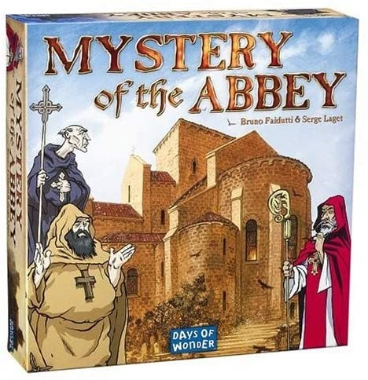
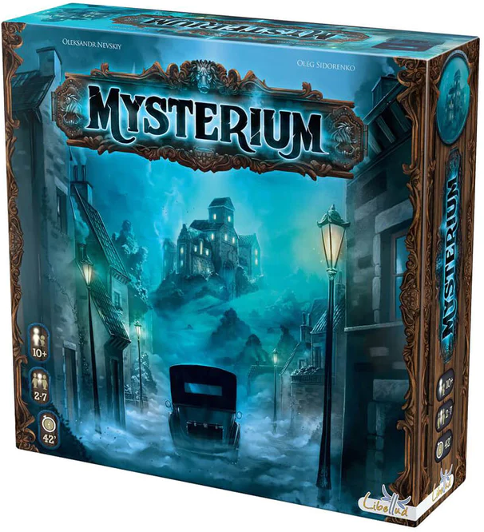
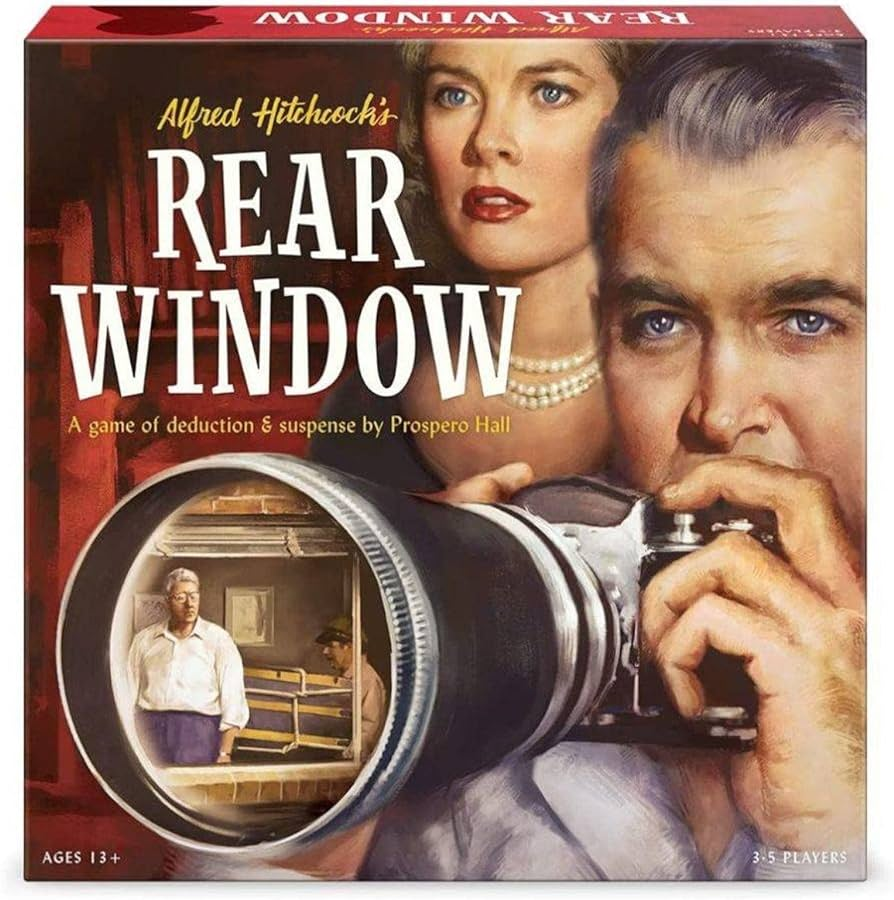

Clue
These are games that involve deduction
Mystery of the Abbey

Mystery of the Abbey is a whodunit deduction game in the spirit of Clue. A monk has been murdered in a medieval French Abbey. Players maneuver their way through the Abbey examining clues and questioning each other to find out who is the culprit.
Monks are of three orders, fat-thin, bald-hatted, bearded-clean shaven. One monk card is hidden, and the rest of the cards are distributed. Turns consist of moving up to two spaces, and then asking a question of any other monks who are present there. (For instance, "how many fat monks do you have?".) Players may either take a "vow of silence" or answer truthfully; they then in turn get to ask the accuser a question. "Mass" occurs every four turns: all players go back to the Sanctuary, an event card is read, and they then pass an ever growing number of cards to their left neighbor. Various rooms have special events or cards associated with them, e.g. in a Cell you get to pick a card from a neighbor, in the Cryptorum you get to pick up a card to take an extra turn later. Unlike Clue you don't automatically win by making a correct Accusation: you get 4 points for getting it right, but you also get 2 points for each correct Declaration of a single trait, and lose points for incorrect declarations and accusations. So, e.g. a person could correctly Declare the culprit but lose the game. Unique Events cards add randomness to each play, and the game begs for House rules to limit the questions.
Mysterium

Unable to talk, the amnesiac ghost communicates with the mediums through visions, which are represented in the game by illustrated cards. The mediums must decipher the images to help the ghost remember how he was murdered: Who did the crime? Where did it take place? Which weapon caused the death? The more the mediums cooperate and guess well, the easier it is to catch the right culprit.
In Mysterium one player takes the role of ghost while everyone else represents a medium. To solve the crime, the ghost must first recall (with the aid of the mediums) all of the suspects present on the night of the murder. A number of suspect, location and murder weapon cards are placed on the table, and the ghost randomly assigns one of each of these in secret to a medium.
Rear Window

Experience Alfred Hitchcock's masterpiece film Rear Window in a game of deduction and suspense. Carefully observe strange clues and ominous patterns in the things going on in the apartments across the way. There are parties, knives, a saw, bickering, laughing, music...and a mysterious trunk. Do you detect a murder? Or is the secret, private world of the neighbors planting frightening ideas in your mind?
In Rear Window, one player takes the role of director Alfred Hitchcock — the "Master of Suspense" — and communicates via building windows clues and signs for the other players without ever uttering a word, ideally giving them enough to go on that they can figure out who the murderer is — or whether a murder even took place.
If a murderer is out there, you need to nail down all eight attributes of that person by the end of four rounds without them catching on to what you see and know.